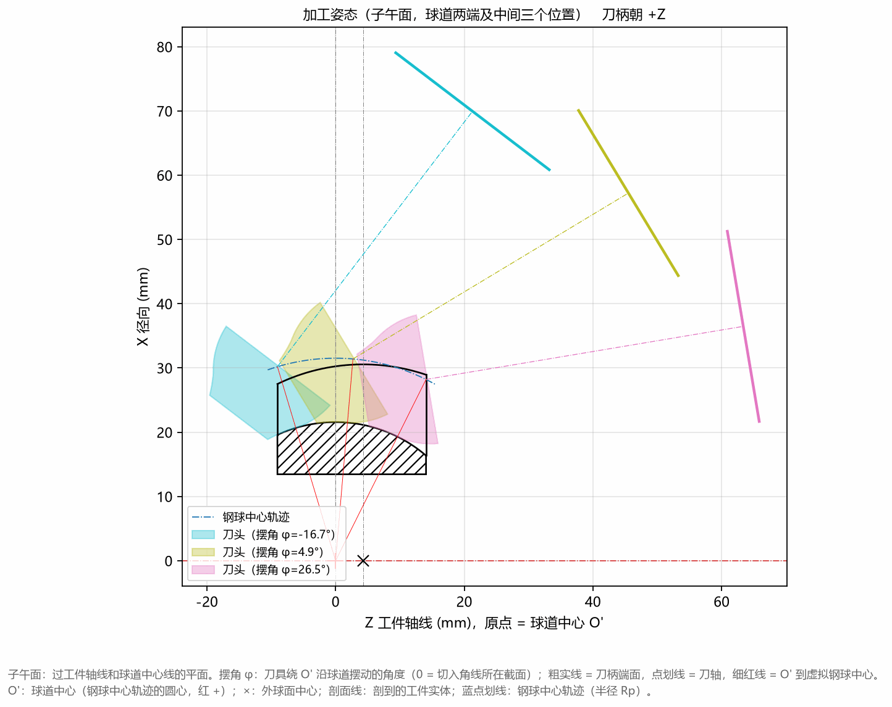

5.4 Tab 4：加工姿态 (Ctrl+4)
加工姿态 标签页将设计好的成型刀头与刀柄放入球道对称平面中，同步展示刀具在球道起点、中间位置、终点三个典型位置处的空间切削姿态与防干涉包络范围。

一、运动包络姿态直观图解
- 顶部标题栏：显示当前位置平面类型、切入角 、刀柄方向及球心距 （例如
加工姿态 (球道两端及中间三个位置) 粗实线 = 刀柄端面，点划线 = 刀轴，刀柄朝 +Z；VL 斜球道则注明斜交平面倾角）； - 回转基准 / 运动轨迹：
- 固定节（圆弧球道）：三条红色细实线从球道中心 呈扇形发散，指向左/中/右三个位置的虚拟钢球中心；
- 钢球中心轨迹与球道底：分别用蓝色点划线与蓝色虚线标出，直观反映进刀轨迹与摆角/行程区间。
- 三个关键位置的刀头与刀柄：
- 青色填充：刀具位于球道起点位置（如摆角 ）的姿态；
- 橄榄黄填充：刀具位于球道中间位置（如 ）的姿态；
- 粉洋红填充：刀具位于球道终点位置（如 ）的姿态；
- 每组姿态均包含半透明刀头截面 + 点划线（刀具旋转轴线） + 末端粗实线（刀柄定位端面，距虚拟球心为
球心距 L）。
二、工程师如何利用此图做机床防干涉校核？
- 核对球道行程 / 摆角范围：从左下角图例直接读取当前球道加工所需的总摆角行程（如
-16.7° ~ +26.5°）或直线球道行程位置（单位mm），确认机床摆台或直线轴行程完全覆盖； - 检查刀柄端面与工件空间间隙：观察末端粗实线（刀柄/主轴端面）与工件表面之间的距离，确保在极限位置时不发生主轴撞击工件或夹具；
- 切换
刀柄方向对比装夹布局：内圈贯通球道可将刀柄方向从朝 +Z改为朝 -Z，重新计算后在本图查看镜像伸出姿态（外圈内腔工件必须使用朝 -Z）； - 查看下方“刀颈允许最大直径”曲线（扩展工件类型适用）：
- 对于非固定节星形套的 5 种扩展工件（如外圈斜筒形壳
EVL12508M.0F2-1，见 Tab 3 附图 ②），软件会在加工姿态图正下方自动追加刀颈允许最大直径（沿刀轴）曲线； - 绿色实线给出刀具从虚拟钢球中心沿刀轴向刀柄方向移动过程中，三维扫描本条球道槽壁、端口与盲端后不碰撞工件的最大允许刀颈直径（全行程最窄包络），并在图中直接标出最窄点直径与安全绿区（与结果面板
▸ 工件与刀具干涉数据完全对应）。
- 对于非固定节星形套的 5 种扩展工件（如外圈斜筒形壳